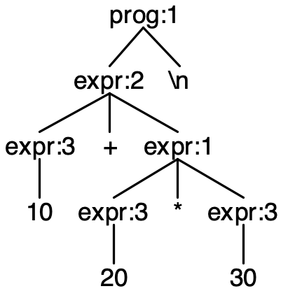

What is ANTLR?
ANTLR (ANother Tool for Language Recognition), is a language tool that provides a framework for constructing recognizers, interpreters, compilers, and translators from grammatical descriptions containing actions in a variety of target languages. ANTLR provides excellent support for tree walking, error recovery, and error reporting.
 Terence Parr
Terence Parr is the maniac behind ANTLR and has been working on language tools since 1989. He is a professor of computer science at the University of San Francisco.
Samples
Quick Start
$ cd /usr/local/lib
$ wget http://antlr.org/download/antlr4-complete.jar
$ export CLASSPATH=".:/usr/local/lib/antlr-4.0-complete.jar:$CLASSPATH"
$ alias antlr4='java -jar /usr/local/lib/antlr-4.0-complete.jar'
$ alias grun='java org.antlr.v4.runtime.misc.TestRig'
Linux
Mac
grammar Expr;
prof: (expr NEWLINE)* ;
expr: expr ('*'|'/') expr
| expr ('+'|'-') expr
| INT
| '(' expr ')'
;
$ antrl4 Expr.g4
$ javac Expr*.java
$ grun EXpr prof -gui
100+2*34
^D

Linux
Mac
Latest News
Testimonials
Kudos. I'm actually really liking ANTLR! I have a pretty darn good
velocity with a rapid prototyping project I am doing in my Google 20%
time. For example, I just discovered a feature in rewrite rules that
does exactly what I need (referencing previous rule ASTs, p. 174 in
your book). It took me about 5 minutes to get this to work and remove
an ugly wart from my grammar. Hats off!
Guido van Rossum
ANTLR is an exceptionally powerful and flexible tool for parsing
formal languages. At Twitter, we use it exclusively for query parsing
in Twitter search. Our grammars are clean and concise, and the
generated code is efficient and stable. The book is our go-to
reference for ANTLR v4 -- engaging writing, clear descriptions and
practical examples all in one place.
Samuel Luckenbill, Senior Manager of Search Infrastructure, Twitter, inc.
Just wanted to take the opportunity to say thanks. ANTLR is a BIG
improvement over yacc/lex, and your support for it most
commendable. Managed to get my tired old brain around it in a
day. Nice work!
Brad Cox; Inventor of Objective-C
Resources
Nullam quis risus eget urna mollis ornare vel eu leo. Sed posuere consectetur est at lobortis. Curabitur blandit tempus porttitor.
Nullam quis risus eget urna mollis ornare vel eu leo. Cras justo odio, dapibus ac facilisis in quam.
Nulla vitae elit libero, a pharetra augue. Aenean lacinia bibendum nulla sed consectetur.
Nullam quis risus eget urna mollis ornare vel eu leo. Sed posuere consectetur est at lobortis. Curabitur blandit tempus porttitor.
Nullam quis risus eget urna mollis ornare vel eu leo. Cras justo odio, dapibus ac facilisis in quam.
Nulla vitae elit libero, a pharetra augue. Aenean lacinia bibendum nulla sed consectetur.